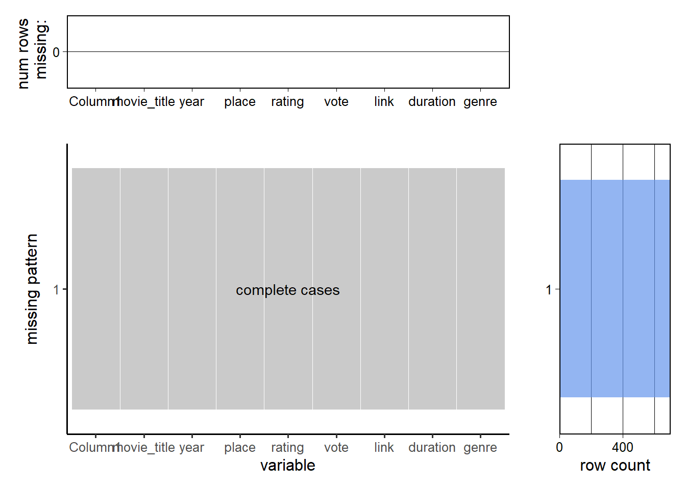
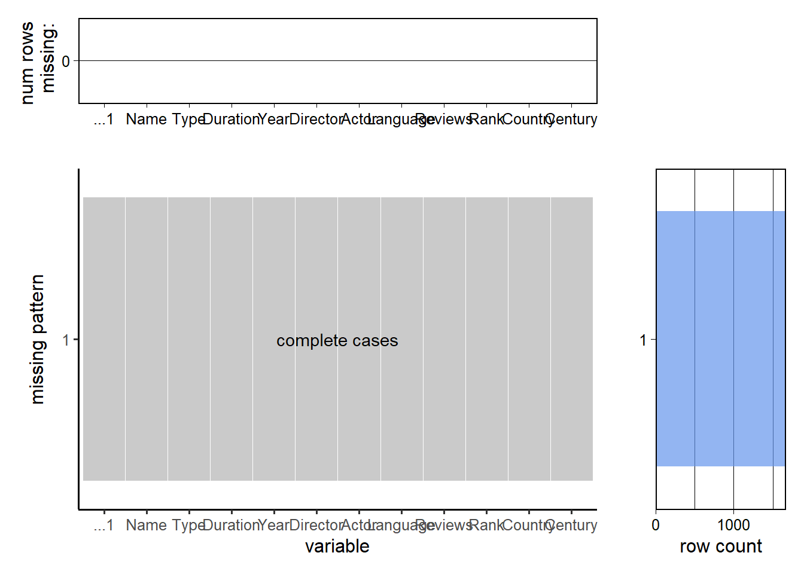

Chapter 4 Missing values
4.1 movie data from IMDB
Top five rows for a brief view on IMDB dataset
## # A tibble: 6 x 9
## Column1 movie_title year place rating vote link duration genre
## <dbl> <chr> <dbl> <dbl> <dbl> <dbl> <chr> <chr> <chr>
## 1 0 The Batman 2022 1 8 434477 /title/tt1877830/ 176 min Action, Crime, Drama
## 2 1 The Northman 2022 2 7.8 40320 /title/tt11138512/ 137 min Action, Adventure, Drama
## 3 2 Everything Everywhere All at Once 2022 3 8.8 31625 /title/tt6710474/ 139 min Action, Adventure, Comedy
## 4 3 KGF: Chapter 2 2022 4 8.9 55 /title/tt10698680/ 168 min Action, Crime, Drama
## 5 4 Spider-Man: No Way Home 2021 5 8.4 86180 /title/tt10872600/ 148 min Action, Adventure, Fantasy
## 6 5 Dune 2021 6 8.1 613257 /title/tt1160419/ 155 min Action, Adventure, DramaCheck the sum of missing value
## [1] 0Provides summary statistics on the columns of the data frame, this will also give details on missing values for each column
## Column1 movie_title year place rating vote link duration
## Min. : 0.0 Length:700 Min. :1920 Min. : 1.0 Min. :7.600 Min. : 1 Length:700 Length:700
## 1st Qu.:174.8 Class :character 1st Qu.:1982 1st Qu.:175.8 1st Qu.:7.700 1st Qu.: 120750 Class :character Class :character
## Median :349.5 Mode :character Median :2000 Median :350.5 Median :7.900 Median : 530619 Mode :character Mode :character
## Mean :349.5 Mean :1994 Mean :350.5 Mean :7.972 Mean : 38505462
## 3rd Qu.:524.2 3rd Qu.:2011 3rd Qu.:525.2 3rd Qu.:8.100 3rd Qu.: 27097079
## Max. :699.0 Max. :2022 Max. :700.0 Max. :9.300 Max. :936662225
## genre
## Length:700
## Class :character
## Mode :character
##
##
## visualize the number of missing intuitively and clearly using plot_missing from redav 
4.2 Movie data from Douban
Top five rows for a brief view on IMDB dataset
## # A tibble: 6 x 12
## ...1 Name Type Duration Year Director Actor Language Reviews Rank Country Century
## <dbl> <chr> <chr> <dbl> <dbl> <chr> <chr> <chr> <dbl> <dbl> <chr> <dbl>
## 1 0 The Shawshank Redemption Crime / Drama 142 1994 Frank Darabont Tim Ro~ English 2610384 9.7 USA 20.9
## 2 1 Farewell My Concubine Drama / Romance / Gay 171 1993 Chen Kaige Leslie~ Mandarin 1938287 9.6 Mainla~ 20.9
## 3 2 Witness for the Prosecution Drama / Crime / Mystery 116 1957 Billy Wilder Tyrone~ English 456535 9.6 USA 20.5
## 4 3 Forrest Gump Drama / Romance 142 1994 Robert Zemeckis Tom Ha~ English 1962283 9.5 USA 20.9
## 5 4 La vita è bella Drama / Comedy / Romance / War 116 1997 Roberto Bernini Robert~ Italian 1205797 9.6 Italy 20.9
## 6 5 Schindler's List Drama / History / War 195 1993 Steven Spielberg Liam N~ English 1005746 9.6 USA 20.9Check the sum of missing value
## [1] 0Provides summary statistics on the columns of the data frame, this will also give details on missing values for each column
## ...1 Name Type Duration Year Director Actor Language
## Min. : 0.0 Length:1664 Length:1664 Min. : 1.0 Min. :1916 Length:1664 Length:1664 Length:1664
## 1st Qu.:138.0 Class :character Class :character 1st Qu.:101.0 1st Qu.:1987 Class :character Class :character Class :character
## Median :277.0 Mode :character Mode :character Median :114.0 Median :2002 Mode :character Mode :character Mode :character
## Mean :277.6 Mean :118.7 Mean :1996
## 3rd Qu.:416.0 3rd Qu.:130.0 3rd Qu.:2012
## Max. :588.0 Max. :450.0 Max. :2022
## Reviews Rank Country Century
## Min. : 1048 Min. :7.400 Length:1664 Min. :20.10
## 1st Qu.: 13340 1st Qu.:8.200 Class :character 1st Qu.:20.80
## Median : 42917 Median :8.400 Mode :character Median :21.00
## Mean : 157159 Mean :8.461 Mean :20.91
## 3rd Qu.: 172482 3rd Qu.:8.700 3rd Qu.:21.10
## Max. :2610384 Max. :9.700 Max. :21.20visualize the number of missing intuitively and clearly using plot_missing from redav 
From the above results, we find there exists no missing pattern in both datasets. This is mostly because we captured the data we need through web crapping from the websites pages by pages dynamically, from which the missing values were all removed inside the loops since they have no text values.